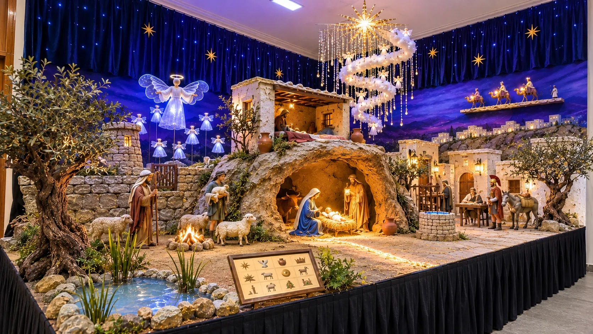
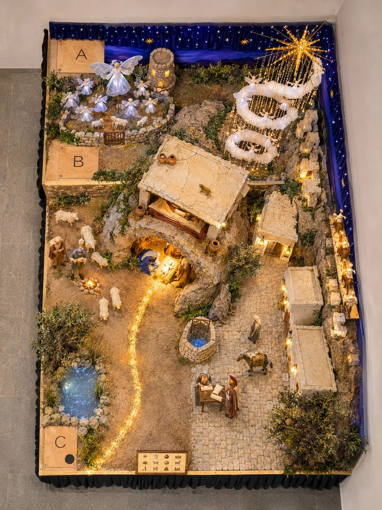
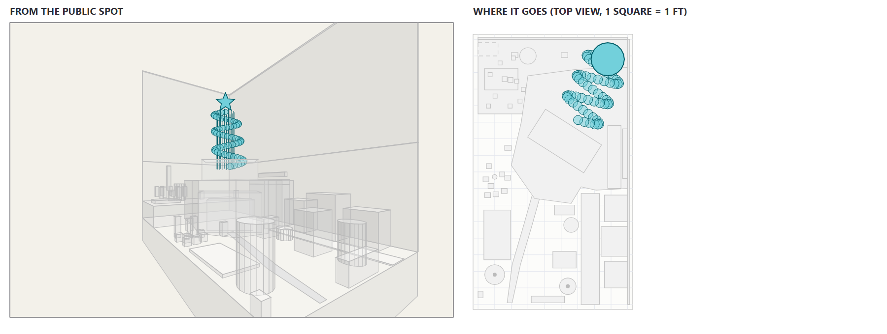
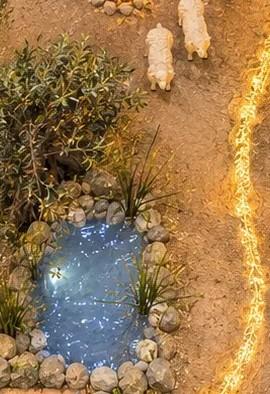

Crib 2026 · That Night in Bethlehem · crew pack
Opens 24 December 2026 · stage 9 ft wide × 16 ft deep · 12 blocks (A, B, C, E to M; there is no D, the rock hill is part of B)


The finished crib from the public spot and from directly above. Generated pictures: build to the blueprints on pages 2 and 3 of your block.
Who builds what, and when
| Block | Name | Build window | Team |
|---|
| A | Two-layer stage | 20 Nov – 5 Dec | Stage team: Vk, Samuel |
| B | Cave, rock hill and Holy Family | 23 Nov – 14 Dec | Team 4: Janet, Mithul, Yugesh, Stephen, Alvin |
| C | House with upper room | 30 Nov – 14 Dec | Team 2: Lenin, Runo, Aarthi, Milton, Monus |
| E | Shepherds' field | 26 Nov – 11 Dec | Team 1: Rufus, Sanjeetha, Andrew, Samuel |
| F | Pipe-cleaner angel choir | 1–14 Dec | Team 3: Austin Joel, Richard, Allwyn (with helpers for the craft) |
| G | Village street | 30 Nov – 17 Dec | Team 5: Jino, Shibi, Suja, Adrian, Deric, Vk |
| H | Lights (one plug, one box) | 23 Nov – 22 Dec | Team 3: Austin Joel, Richard, Allwyn |
| I | Star and cloud spiral | 30 Nov – 21 Dec | Team 3: Austin Joel, Richard, Allwyn |
| J | Backdrop | 20 Nov – 17 Dec | Team 3: Austin Joel, Richard, Allwyn |
| K | Far village and Magi caravan | 10–17 Dec | Team 4: Janet, Mithul, Yugesh, Stephen, Alvin |
| L | Foreground and view spot | 19–23 Dec | Stage team: Vk, Samuel |
| M | Photo corner: pond and selfie mirror | 11–20 Dec | To be assigned (suggest the Stage team: Vk, Samuel) |
How to use this pack
- Find your block letter.
- Page 1: what it looks like and a prompt for a picture of the finished block.
- Page 2: the blueprint drawing. Page 3: every numbered part with its exact size and place, and the cut list. Page 4: the steps, in order. Tick "done when" and hand over.
The whole crib: front, side and top, plus the view from the public spot
Feet. Stage 9 ft wide at the front × 16 ft deep. Letters are the block letters.
Check on site first
☐ The church socket right behind the stage (back-left corner): exact spot and circuit rating☐ Deck height (2 ft assumed), size, level, and whether you may screw into it☐ Ceiling height (about 15 ft assumed) and ceiling type☐ Altar centred on the front wall; crib at its right end☐ Exit and the deck load rating☐ Work-at-height rules for hanging block I☐ How much 2023 plywood still existsA
Two-layer stage
12 second layer (the upper level); the rented deck stays as the lower level
Page 1 of 4 · what it is
How it looks from the public spot, and where it goes

Size and place: Lower level: the rented deck, flat, 9 ft wide × 16 ft long, 2 ft above the church floor. Upper level: a plywood box 9 ft wide × 4.5 ft deep × 1.5 ft high against the back wall (the step starts 11.5 ft from the front). Black skirting on the front and the left side. Build: 20 Nov – 5 Dec Team: Stage team: Vk, Samuel
In short
- On site: measure the real deck (2 ft high assumed, free 9 × 16 ft, level) and ask the stage supplier whether you may...
- Workshop: build two frames 4.5 ft × 4.5 ft from 2 × 2 in battens, fixed with screws (not glue), with cross battens...
- Skin each frame: top 12 mm plywood, front and end faces 9 mm. Make the step face 9 ft long × 1.5 ft high; it will be...
- Cut the three hatch lids (sizes in the cut list) and leave them loose, labelled A, B, C.
- Place the two frames against the back wall on the deck, side by side, and tie them together. The front faces line up...
You need
- Plywood 9–12 mm, 8 × 4 ft (3 sheets)
- Pine battens 2 × 2 in (~90 ft)
- Screws, brackets, clamps, wood glue (lot)
- Black pleated skirting + Velcro (25 ft run × 2 ft)
- Fire-retardant spray (all cloth, thermocol, cotton) (4 L)
- Hatch lids, hinges, floor markers (lot)
Done when
- Both boxes are rigid: two people can stand on any part without flex.
- Hatch lids A, B and C open easily and are labelled.
- Skirting hides the open front and left side down to the floor.
Prompt to generate the end result
Stage: 9 ft wide at the SHORT front, 16 ft DEEP along the long left side (do not swap). Attached: (1) the final photo of the whole crib, to match its look and materials; (2) a picture of ONE block, to match its shape and place. Create ONE real-looking phone photograph of just this block as built, seen from the front-left at a three-quarter angle, turned about 33 degrees as in the attached picture, on a plain light-grey background with soft warm light. BLOCK A, Two-layer stage: Two flat plywood levels, 9 ft WIDE across the front and 16 ft LONG: the front 11.5 ft is flat at deck height (2 ft above the church floor), and across the back 4.5 ft, the full 9 ft width, a second level is raised 1.5 ft. The step is a plain vertical plywood face running straight across the full width. Black pleated skirting hangs only on the front and the left side; the back and right sides touch the church walls. Three small loose plywood hatch lids marked A, B and C. No ramp, no terraces, no stairs. Materials: bare 9-12 mm plywood, 2x2 pine battens, black pleated skirting, screw heads, hatch lids marked in black marker. Real physical handmade model, not CGI, not an illustration. No Christmas tree, no snow, no text. Palette: lamp gold, warm white, Mary blue, midnight blue, dusk violet, mist blue, limestone, sand, ochre, olive; no red, bright green or pink. 16:9.
A
Two-layer stage
Blueprint with exact measurements
Page 2 of 4 · the drawing
Feet. x is measured from the LEFT edge of the stage, y from the BACK wall. Heights are above the deck. Numbers match the parts table on the next page.
A
Two-layer stage
Every part: size and place
Page 3 of 4 · the numbers
Parts table (x from the LEFT edge, y from the BACK wall, heights above the deck)
| No. | Part | Size | Where | Sits at |
|---|
| 1 | Upper layer: two plywood boxes U1 and U2 | each 4.5 ft × 4.5 ft × 1.5 ft high, side by side = 9 ft wide × 4.5 ft deep × 1.5 ft high | U1: x 0–4.5, y 0–4.5; U2: x 4.5–9, y 0–4.5 (against the back wall) | on the deck |
| 2 | Step face | 9 ft long × 1.5 ft high plywood face along the front of the boxes; faced with dry-stone by block E | y 4.5 (11.5 ft from the front), x 0–9 | on the deck |
| 3 | Lower layer = the rented deck | flat, 9 ft wide × 11.5 ft deep in front of the step (the deck itself is 16 ft long and 2 ft above the church floor) | x 0–9, y 4.5–16 | 0 ft (deck level) |
| 4 | Hatch lid A (distribution box) | 1.2 ft × 0.8 ft, loose plywood lid | x 0–1.2, y 0.2–1.0 | flush with the top of the upper layer (+1.5 ft) |
| 5 | Hatch lid B (field junction) | 1 ft × 0.8 ft, loose plywood lid | x 1.0–2.0, y 3.6–4.4 | flush with the top of the upper layer (+1.5 ft) |
| 6 | Hatch lid C (speaker) | 1 ft × 1 ft, loose plywood lid | x 0–1, y 15–16 | flush with the deck |
| 7 | Skirting, black pleated | 25 ft run (9 ft front + 16 ft left), 2 ft drop, Velcro | front edge and left edge | hangs to the church floor |
Cut and make list (exact sizes)
| Upper layer | plywood box 9 ft wide × 4.5 ft deep × 1.5 ft high against the back wall, built as two boxes each 4.5 ft × 4.5 ft × 1.5 ft side by side (the step is 11.5 ft from the front) |
| Frame | 2 × 2 in battens: 4 sides per box plus cross battens at 1.5 ft centres both ways; about 90 ft in total |
| Skin | plywood 9–12 mm: top 9 × 4.5 ft, step face 9 × 1.5 ft, two ends 4.5 × 1.5 ft; 3 sheets of 8 × 4 ft |
| Lower layer | the rented deck stays as it is: flat, 2 ft above the floor; nothing is built on it except the other blocks |
| Hatch lids (loose plywood) | A: 1.2 × 0.8 ft at x 0–1.2, y 0.2–1.0 (light box) · B: 1 × 0.8 ft at x 1.0–2.0, y 3.6–4.4 (field junction) · C: 1 × 1 ft at x 0–1, y 15–16 (speaker) |
| Skirting, black pleated | 25 ft run (9 ft front + 16 ft left), 2 ft drop, fixed with Velcro |
A
Two-layer stage
Exact build: do this, in this order
Page 4 of 4 · build it
Do exactly this
- On site: measure the real deck (2 ft high assumed, free 9 × 16 ft, level) and ask the stage supplier whether you may screw into it. If not, clamp the boxes to the deck edge and weigh them down. Mark the 9 × 16 ft rectangle with tape and the step line 11.5 ft from the front.
- Workshop: build two frames 4.5 ft × 4.5 ft from 2 × 2 in battens, fixed with screws (not glue), with cross battens at 1.5 ft centres both ways. Number each frame in marker.
- Skin each frame: top 12 mm plywood, front and end faces 9 mm. Make the step face 9 ft long × 1.5 ft high; it will be faced with dry-stone by block E.
- Cut the three hatch lids (sizes in the cut list) and leave them loose, labelled A, B, C.
- Place the two frames against the back wall on the deck, side by side, and tie them together. The front faces line up in one straight step across the full 9 ft.
- Fix the black skirting with Velcro along the front edge (9 ft) and the left edge (16 ft), 2 ft drop, down to the floor.
- Spray all cloth and any thermocol with fire retardant (4 L in total).
- Check: two people on any part without flex, the step is 1.5 ft high all along, and every piece passes through the church door.
Before you start
- Measure the real deck: height (2 ft assumed), size, level, and whether you may screw into it. If not, clamp and weigh the boxes down.
- Mark the 9 × 16 ft grid and the step line 11.5 ft from the front with tape.
Materials to get
Plywood 9–12 mm, 8 × 4 ft (3 sheets), Pine battens 2 × 2 in (~90 ft), Screws, brackets, clamps, wood glue (lot), Black pleated skirting + Velcro (25 ft run × 2 ft), Fire-retardant spray (all cloth, thermocol, cotton) (4 L), Hatch lids, hinges, floor markers (lot)
Tools: Saw, drill, screw gun, spirit level, tape measure, staple gun
Done when (tick each)
- Both boxes are rigid: two people can stand on any part without flex.
- Hatch lids A, B and C open easily and are labelled.
- Skirting hides the open front and left side down to the floor.
- Every piece passes through the church door.
Hands over to
Everything stands on A. B, C, E, F, G, K, L and M go on after A is placed; H uses the hatches.B
Cave, rock hill and Holy Family
2 cave, 3 Holy Family with ox, donkey and manger, 5 rock hill
Page 1 of 4 · what it is
How it looks from the public spot, and where it goes

Size and place: One unit about 7 × 6 ft, 3.3 ft high, on the lower level with its back against the step. Cave 4 × 2.5 ft at floor level, turned 33° so the 3 ft wide mouth faces the public spot V; arch 2.5 ft high, centre x 4.4, y 7.4. Hill top and house floor at +3.3 ft. Figures 2 ft (hero scale 1:3), ox and donkey about 1 ft. Build: 23 Nov – 14 Dec Team: Team 4: Janet, Mithul, Yugesh, Stephen, Alvin
In short
- Make a cardboard mock-up of the arch (3 ft wide × 2.5 ft high) and the cave plan (4 × 2.5 ft). STACK (cave, hill,...
- Cut the plywood base and glue 4 in thermocol layers to the hill outline (see the top view) up to 3.3 ft, sealing...
- Mark the cave with its centre at x 4.4 ft, y 7.4 ft, turned 33°. Cut the 4 × 2.5 ft inside with the hot knife and...
- Carve horizontal strata and cracks on the outside; keep the back of the hill against the step.
- Mesh the arch and overhangs. Coat with plaster of Paris + PVA, 3 mm thick; press on sand/grout, real pebbles and dry...
You need
- Thermocol 4 in, 8 × 4 ft (9 sheets)
- Plaster of Paris 25 kg (4 bags)
- Wall putty / tile grout + sand (3 bags)
- PVA glue (5 L)
- Emulsion / acrylic earth colours + brushes (8 L)
- Chicken mesh + binding wire (lot)
- Straw, dry grass tufts (lot)
Done when
- Rock reaches +3.3 ft and about 10 in of rock sits above the arch.
- From V the manger and baby are visible and not hidden by the arch.
- Every piece fits through the church door.
Prompt to generate the end result
Stage: 9 ft wide at the SHORT front, 16 ft DEEP along the long left side (do not swap). Attached: (1) the final photo of the whole crib, to match its look and materials; (2) a picture of ONE block, to match its shape and place. Create ONE real-looking phone photograph of just this block as built, seen from the front-left at a three-quarter angle, turned about 33 degrees as in the attached picture, on a plain light-grey background with soft warm light. BLOCK B, Cave, rock hill and Holy Family: A rugged limestone rock hill 3.3 ft high with horizontal strata, cracks and moss, standing on the flat lower level with its back against the step. A rough cave at floor level: a rounded arch about 3 ft wide and 2.5 ft high, mouth turned 33 degrees toward the viewer, warm gold glow inside, about 10 inches of rock above the arch. In the cave: a carved stone manger with straw, Mary in blue and cream, Joseph in ochre holding a small lantern, baby Jesus in warm white, an ox and a donkey (2 ft hero figures). Flat top on the hill for the house. Size and place: One unit about 7 × 6 ft, 3.3 ft high, on the lower level with its back against the step. Cave 4 × 2.5 ft at floor level, turned 33° so the 3 ft wide mouth faces the public spot V; arch 2.5 ft high, centre x 4.4, y 7.4. Hill top and house floor at +3.3 ft. Figures 2 ft (hero scale 1:3), ox and donkey about 1 ft. Materials: carved thermocol coated in plaster, sand and grout with real pebbles, dry-brushed sand then ochre then olive, near-black cave interior, straw, clay, cloth. Real physical handmade model, not CGI, not an illustration. No Christmas tree, no snow, no text. Palette: lamp gold, warm white, Mary blue, midnight blue, dusk violet, mist blue, limestone, sand, ochre, olive; no red, bright green or pink. 16:9.
B
Cave, rock hill and Holy Family
Blueprint with exact measurements
Page 2 of 4 · the drawing
Feet. x is measured from the LEFT edge of the stage, y from the BACK wall. Heights are above the deck. Numbers match the parts table on the next page.
B
Cave, rock hill and Holy Family
Every part: size and place
Page 3 of 4 · the numbers
Parts table (x from the LEFT edge, y from the BACK wall, heights above the deck)
| No. | Part | Size | Where | Sits at |
|---|
| 1 | rock hill | about 7 ft × 6 ft base (irregular, see top view), up to 3.3 ft high; keep 1 ft free behind for cables | 2.0–9.0 ft from the left edge; 1.7–9.9 ft from the back wall | see stack note |
| 2 | cave | 4 ft (48 in) × 2.5 ft (30 in) × 2.5 ft (30 in) high, arch 2.5 ft high; turned 33° toward V | 2.0–6.8 ft from the left edge; 5.3–9.5 ft from the back wall | see stack note |
| 3 | Holy Family | 3 ft (36 in) × 1.2 ft (14 in) × 2 ft (24 in) high; turned 33° toward V | 2.7–5.9 ft from the left edge; 6.2–8.8 ft from the back wall | see stack note |
STACK (cave, hill, house): the cave floor is at deck level and the arch is 2.5 ft high. The hill top and the house floor are at +3.3 ft, so about 10 in of rock sits above the arch. The room is 1.5 ft high, so its roof is at +4.8 ft. Make a cardboard mock-up of cave + house first and look at it from the public spot before cutting thermocol.
Cut and make list (exact sizes)
| Thermocol 4 in | 9 sheets of 8 × 4 ft, glued in layers up to 3.3 ft (about 10 layers at the highest point) |
| Hill | about 7 ft × 6 ft base, 3.3 ft high, on the lower level with its back against the step; keep 1 ft free behind for cables |
| Cave inside | 4 ft long × 2.5 ft deep, arch 3 ft wide × 2.5 ft high at floor level; centre x 4.4 ft, y 7.4 ft; turned 33° so the mouth faces the public spot V |
| Plywood base 12 mm | 2 sheets, 7 × 6 ft in pieces no wider than 4 ft |
| Figures (hero scale 1:3) | Mary, Joseph, baby about 2 ft for a standing figure; Holy Family group 3 ft × 1.2 ft; ox and donkey about 1 ft |
| Manger | thermocol + plaster, about 1 ft long, with a clay lamp |
| Light points | holes for 2 warm COB lights (above the arch and behind the manger), the manger spot and the cross-shadow lamp; 1 ft cable tail at each (block H fits the lights) |
B
Cave, rock hill and Holy Family
Exact build: do this, in this order
Page 4 of 4 · build it
Do exactly this
- Make a cardboard mock-up of the arch (3 ft wide × 2.5 ft high) and the cave plan (4 × 2.5 ft). STACK (cave, hill, house): the cave floor is at deck level and the arch is 2.5 ft high. The hill top and the house floor are at +3.3 ft, so about 10 in of rock sits above the arch. The room is 1.5 ft high, so its roof is at +4.8 ft. Make a cardboard mock-up of cave + house first and look at it from the public spot before cutting thermocol.
- Cut the plywood base and glue 4 in thermocol layers to the hill outline (see the top view) up to 3.3 ft, sealing every layer with PVA. Keep 1 ft free behind for cables.
- Mark the cave with its centre at x 4.4 ft, y 7.4 ft, turned 33°. Cut the 4 × 2.5 ft inside with the hot knife and the arch to the template, leaving about 10 in of rock above the arch.
- Carve horizontal strata and cracks on the outside; keep the back of the hill against the step.
- Mesh the arch and overhangs. Coat with plaster of Paris + PVA, 3 mm thick; press on sand/grout, real pebbles and dry grass while wet.
- Dry-brush sand, then ochre, then olive; darker in the cracks. Paint the cave inside near-black; keep the rock around the cave one shade darker so the gold glows.
- Cut the light holes and leave a 1 ft cable tail at each. Make the manger and the clay lamp, lay straw, then place Mary, Joseph, baby, ox and donkey last (group about 3 × 1.2 ft).
- Split the unit into numbered pieces, none wider than 4 ft, and check each passes the church door.
Before you start
- Wear a mask for plaster dust; cut thermocol outdoors; fire-retardant spray every cut surface.
- Decide: buy new 2 ft figures (₹18,000) or reuse and repaint the 2023 set (₹8,000).
- Make a cardboard mock-up of cave + house first (see the stack note).
Materials to get
Thermocol 4 in, 8 × 4 ft (9 sheets), Plaster of Paris 25 kg (4 bags), Wall putty / tile grout + sand (3 bags), PVA glue (5 L), Emulsion / acrylic earth colours + brushes (8 L), Chicken mesh + binding wire (lot), Straw, dry grass tufts (lot), Plywood 12 mm base, 8 × 4 ft (2 sheets), Holy Family, 2 ft figures: Mary, Joseph, baby (set of 3), Ox and donkey, about 1 ft (2), Manger (thermocol + plaster) + clay lamp (1)
Tools: Hot-wire cutter, hot knife, trowel, mesh cutters, glue gun, brushes, sculpting clay, dust mask
Done when (tick each)
- Rock reaches +3.3 ft and about 10 in of rock sits above the arch.
- From V the manger and baby are visible and not hidden by the arch.
- Every piece fits through the church door.
- Holes and 1 ft cable tails are left for the cave lights (block H fits them).
Hands over to
C (house) rests on the hill top. E (field) and K (far village) sit beside it. H fits the cave and manger lights.C
House with upper room
4 house with the upper guest room (kataluma), cut open
Page 1 of 4 · what it is
How it looks from the public spot, and where it goes

Size and place: 4 × 2 ft room, floor at +3.3 ft on the hill top, room height 1.5 ft, roof at +4.8 ft. Turned 33° toward V. Outside stair of 8 steps rising 3.3 ft. Build: 30 Nov – 14 Dec Team: Team 2: Lenin, Runo, Aarthi, Milton, Monus
In short
- Check the cave arch (2.5 ft) and the +3.3 ft hill top with the mock-up (see block B). STACK (cave, hill, house): the...
- Cut the 12 mm plywood floor tray 4 × 2 ft. It rests on the hill top at +3.3 ft and on two 2 × 2 in posts that stand...
- Cut the walls from 2 in thermocol: back wall 4 ft × 1.5 ft, side walls 2 ft × 1.5 ft. Glue them to the tray and...
- Make the flat roof slab 4 × 2 ft with a 3 in parapet and fit it. The whole room must weigh under 8 kg.
- Plaster and whitewash with plain flat roofs (no white frosting). Cut the outside stone steps: 8 steps, each 5 in...
You need
- Thermocol 2 in, 8 × 4 ft (2 sheets)
- Plywood 12 mm floor tray, 4 × 2 ft (1 piece)
- PoP + whitewash paint (1 bag + 1 L)
- Sleeping travellers 1:6 (clay + cloth, or bought) (6)
- Props: jars, baskets, mats, blankets (lot)
- Balsa / bamboo for beams, door (lot)
Done when
- Whole room weighs under 8 kg and sits on the hill top and the two posts.
- Hidden details placed: cat on the roof, clay oven, sleeping child.
- Three small holes with 1 ft cable tails are left for the room lamps (block H fits them).
Prompt to generate the end result
Stage: 9 ft wide at the SHORT front, 16 ft DEEP along the long left side (do not swap). Attached: (1) the final photo of the whole crib, to match its look and materials; (2) a picture of ONE block, to match its shape and place. Create ONE real-looking phone photograph of just this block as built, seen from the front-left at a three-quarter angle, turned about 33 degrees as in the attached picture, on a plain light-grey background with soft warm light. BLOCK C, House with upper room: A whitewashed stone guest room with a flat plastered roof (no white frosting, no snow) and a low parapet, open front cut away to show sleeping travellers, clay jars and three small warm lamps, a stone outside stair of 8 steps, a cat on the roof. It sits on top of the hill, its floor 3.3 ft above the deck. Size and place: 4 × 2 ft room, floor at +3.3 ft on the hill top, room height 1.5 ft, roof at +4.8 ft. Turned 33° toward V. Outside stair of 8 steps rising 3.3 ft. Materials: limestone-coloured plastered thermocol walls, terracotta jars, woven mats, wool blankets, wooden lintels. Real physical handmade model, not CGI, not an illustration. No Christmas tree, no snow, no text. Palette: lamp gold, warm white, Mary blue, midnight blue, dusk violet, mist blue, limestone, sand, ochre, olive; no red, bright green or pink. 16:9.
C
House with upper room
Blueprint with exact measurements
Page 2 of 4 · the drawing
Feet. x is measured from the LEFT edge of the stage, y from the BACK wall. Heights are above the deck. Numbers match the parts table on the next page.
C
House with upper room
Every part: size and place
Page 3 of 4 · the numbers
Parts table (x from the LEFT edge, y from the BACK wall, heights above the deck)
| No. | Part | Size | Where | Sits at |
|---|
| 1 | guest room | 4 ft (48 in) × 2 ft (24 in) × 1.5 ft (18 in) high; turned 33° toward V | 3.0–7.4 ft from the left edge; 4.2–8.1 ft from the back wall | see stack note |
STACK (cave, hill, house): the cave floor is at deck level and the arch is 2.5 ft high. The hill top and the house floor are at +3.3 ft, so about 10 in of rock sits above the arch. The room is 1.5 ft high, so its roof is at +4.8 ft. Make a cardboard mock-up of cave + house first and look at it from the public spot before cutting thermocol.
Cut and make list (exact sizes)
| Floor tray, plywood 12 mm | 4 ft × 2 ft |
| Walls, thermocol 2 in thick | back wall 4 ft × 1.5 ft high; two side walls 2 ft × 1.5 ft high; the front is cut open |
| Roof slab | 4 ft × 2 ft, with a parapet about 3 in high around it; roof at +4.8 ft |
| Posts 2 × 2 in | 2 posts, length 3.3 ft (about 39 in) minus the plywood thickness, standing on the cave base (not on the cave roof) |
| Outside stair | 8 steps, total rise 3.3 ft (40 in), so each step rises 5 in; tread about 6 in |
| Light points | 3 small holes in the room ceiling with a 1 ft cable tail each (block H fits the lamps) |
| Dressing | 6 sleeping travellers 1:6 (about 1 ft long), jars, mats, blankets; cat on the roof, clay oven, sleeping child |
C
House with upper room
Exact build: do this, in this order
Page 4 of 4 · build it
Do exactly this
- Check the cave arch (2.5 ft) and the +3.3 ft hill top with the mock-up (see block B). STACK (cave, hill, house): the cave floor is at deck level and the arch is 2.5 ft high. The hill top and the house floor are at +3.3 ft, so about 10 in of rock sits above the arch. The room is 1.5 ft high, so its roof is at +4.8 ft. Make a cardboard mock-up of cave + house first and look at it from the public spot before cutting thermocol.
- Cut the 12 mm plywood floor tray 4 × 2 ft. It rests on the hill top at +3.3 ft and on two 2 × 2 in posts that stand on the cave base; cut the posts so the floor is exactly 3.3 ft above the deck.
- Cut the walls from 2 in thermocol: back wall 4 ft × 1.5 ft, side walls 2 ft × 1.5 ft. Glue them to the tray and leave the front open.
- Make the flat roof slab 4 × 2 ft with a 3 in parapet and fit it. The whole room must weigh under 8 kg.
- Plaster and whitewash with plain flat roofs (no white frosting). Cut the outside stone steps: 8 steps, each 5 in high and about 6 in deep.
- Cut the three lamp holes and leave a 1 ft cable tail at each.
- Dress the room: mats, blankets, jars, six sleepers. Add the hidden details: cat on the roof, clay oven, sleeping child.
- Check the room lifts off the hill as one piece and passes the church door.
Before you start
- Take the cave arch height (2.5 ft) and the +3.3 ft hill top from block B.
- Gather six 1:6 sleeping travellers (about 1 ft long) or clay to make them.
Materials to get
Thermocol 2 in, 8 × 4 ft (2 sheets), Plywood 12 mm floor tray, 4 × 2 ft (1 piece), PoP + whitewash paint (1 bag + 1 L), Sleeping travellers 1:6 (clay + cloth, or bought) (6), Props: jars, baskets, mats, blankets (lot), Balsa / bamboo for beams, door (lot)
Tools: Hot knife, hobby saw, glue gun, small brushes
Done when (tick each)
- Whole room weighs under 8 kg and sits on the hill top and the two posts.
- Hidden details placed: cat on the roof, clay oven, sleeping child.
- Three small holes with 1 ft cable tails are left for the room lamps (block H fits them).
- Lifts off the hill as one piece.
Hands over to
Sits on B. H fits the three room lamps through the holes you leave.E
Shepherds' field
8 shepherds, sheep and campfire; 11 sheepfold; 13 watchtower; the dry-stone step wall
Page 1 of 4 · what it is
Target look (generated)

cut from the final top view
How it looks from the public spot, and where it goes

Size and place: Left side. Lower level: 2 shepherds, 6 sheep and a campfire (x 0.2–1.9, y 7.0–9.6). Upper level behind the step: sheepfold 2 × 1.3 ft (x 0.4–2.4, y 1.75–3.05) and a 1 ft round watchtower 1.5 ft tall at x 3.0, y 1.0. The step face (9 ft × 1.5 ft) is faced as a dry-stone wall. Build: 26 Nov – 11 Dec Team: Team 1: Rufus, Sanjeetha, Andrew, Samuel
In short
- Agree the angel choir place with block F: it stands on the upper level above the sheepfold.
- Face the step: glue 2 in thermocol 9 ft long × 1.5 ft high to the step, carve it as a dry-stone wall and glue real...
- Upper level: build the sheepfold (pebble ring 2.0 × 1.3 ft with a thorn gate) at x 0.4–2.4, y 1.75–3.05 and the...
- Cover the upper and lower ground with sand and soil, then patches of grass and moss. Paint olive, sand and limestone...
- Lower level: make the campfire from twigs and pebbles at x 1.0, y 8.3 and leave a light hole.
You need
- Thermocol 2 in, 8 × 4 ft (step wall, sheepfold base) (2 sheets)
- PoP + grout (1 bag)
- Soil, sand, artificial grass, moss (lot)
- Paint + brushes (3 L)
- Shepherd figures 1.2 ft (old man, young man + lamb) (2)
- Wool sheep (6)
- Campfire: twigs and pebbles (light fitted by H) (1)
Done when
- The step wall is covered in carved dry-stone with real pebbles, 1.5 ft high, full width.
- Shepherds, sheep and fold are paler and cooler than the village (tier B–C).
- Ground between the wall and the hill is sand and soil with grass patches.
Prompt to generate the end result
Stage: 9 ft wide at the SHORT front, 16 ft DEEP along the long left side (do not swap). Attached: (1) the final photo of the whole crib, to match its look and materials; (2) a picture of ONE block, to match its shape and place. Create ONE real-looking phone photograph of just this block as built, seen from the front-left at a three-quarter angle, turned about 33 degrees as in the attached picture, on a plain light-grey background with soft warm light. BLOCK E, Shepherds' field: A shepherds' field on two flat levels: on the lower level two shepherds in earth-brown cloaks (one old with a staff, one young holding a lamb), six real-wool sheep and a small campfire; behind them the 1.5 ft step faced as a dry-stone wall running the full width; on the raised level behind the wall a ring-shaped stone sheepfold with a thorn gate and a small round stone watchtower. Sand and soil ground with patches of grass and moss. Size and place: Left side. Lower level: 2 shepherds, 6 sheep and a campfire (x 0.2–1.9, y 7.0–9.6). Upper level behind the step: sheepfold 2 × 1.3 ft (x 0.4–2.4, y 1.75–3.05) and a 1 ft round watchtower 1.5 ft tall at x 3.0, y 1.0. The step face (9 ft × 1.5 ft) is faced as a dry-stone wall. Materials: thermocol carved as dry-stone walls with real pebbles, sand and soil, artificial grass and moss, cream wool, clay figures. Real physical handmade model, not CGI, not an illustration. No Christmas tree, no snow, no text. Palette: lamp gold, warm white, Mary blue, midnight blue, dusk violet, mist blue, limestone, sand, ochre, olive; no red, bright green or pink. 16:9.
E
Shepherds' field
Blueprint with exact measurements
Page 2 of 4 · the drawing
Feet. x is measured from the LEFT edge of the stage, y from the BACK wall. Heights are above the deck. Numbers match the parts table on the next page.
E
Shepherds' field
Every part: size and place
Page 3 of 4 · the numbers
Parts table (x from the LEFT edge, y from the BACK wall, heights above the deck)
| No. | Part | Size | Where | Sits at |
|---|
| 1 | sheepfold | 2 ft (24 in) × 1.3 ft (16 in) × 3 in high | 0.4–2.4 ft from the left edge; 1.8–3.0 ft from the back wall | 1.5 ft above the deck |
| 2 | watchtower | 1 ft (12 in) × 1 ft (12 in) × 1.5 ft (18 in) high | 2.5–3.5 ft from the left edge; 0.5–1.5 ft from the back wall | 1.5 ft above the deck |
| 3 | shepherd ×2 | figure 1.2 ft (14 in) tall, scale 1:6; stands on a base about 4 in across | 2 places, e.g. 0.5–0.8 ft from the left edge; 7.5–7.8 ft from the back wall; 1.3–1.6 ft from the left edge; 8.0–8.3 ft from the back wall | on the deck |
| 4 | sheep ×6 | about 0.45 ft (5 in) long, 0.4 ft (5 in) tall; real wool | 6 places, e.g. 0.6–0.9 ft from the left edge; 8.7–9.0 ft from the back wall; 1.4–1.8 ft from the left edge; 9.0–9.3 ft from the back wall | on the deck |
| 5 | campfire | about 4 in across, 4 in tall, orange flicker LED inside | 0.8–1.1 ft from the left edge; 8.2–8.5 ft from the back wall | on the deck |
Cut and make list (exact sizes)
| Step wall | face the whole step, 9 ft long × 1.5 ft high, with 2 in thermocol carved as dry-stone and real pebbles (the hill hides the middle part) |
| Upper level (behind the step) | sheepfold: ring of pebbles 2.0 × 1.3 ft, walls 3 in high, thorn gate, at x 0.4–2.4, y 1.75–3.05 · watchtower: 1 ft across, 1.5 ft tall at x 3.0, y 1.0 (PVC core + pebble clay) |
| Lower level (in front of the step) | 2 shepherds 1.2 ft tall (one old with a staff, one young with a lamb) at about x 0.5, y 7.5 and x 1.3, y 8.0 · 6 wool sheep about 5 in long · campfire of twigs at x 1.0, y 8.3 (light fitted by H) |
| Ground | sand and soil with patches of artificial grass and moss, between the step wall and the hill and around the figures |
| Light points | campfire (1 hole) and two field floods on small stands behind rocks at x 1.6, y 6.4 and x 2.9, y 8.6 (block H fits them) |
E
Shepherds' field
Exact build: do this, in this order
Page 4 of 4 · build it
Do exactly this
- Agree the angel choir place with block F: it stands on the upper level above the sheepfold.
- Face the step: glue 2 in thermocol 9 ft long × 1.5 ft high to the step, carve it as a dry-stone wall and glue real pebbles on it.
- Upper level: build the sheepfold (pebble ring 2.0 × 1.3 ft with a thorn gate) at x 0.4–2.4, y 1.75–3.05 and the watchtower at x 3.0, y 1.0, 1 ft across and 1.5 ft tall.
- Cover the upper and lower ground with sand and soil, then patches of grass and moss. Paint olive, sand and limestone colours.
- Lower level: make the campfire from twigs and pebbles at x 1.0, y 8.3 and leave a light hole.
- Place the 2 shepherds and the 6 sheep last (shepherds 1.2 ft tall, sheep about 5 in).
- Leave holes and 1 ft cable tails for the campfire light and the two field floods.
- Check the pieces lift out one at a time.
Before you start
- Check the angel choir place with block F: the choir stands above the sheepfold.
- Leave holes and 1 ft cable tails for the campfire light and the two field floods (block H).
Materials to get
Thermocol 2 in, 8 × 4 ft (step wall, sheepfold base) (2 sheets), PoP + grout (1 bag), Soil, sand, artificial grass, moss (lot), Paint + brushes (3 L), Shepherd figures 1.2 ft (old man, young man + lamb) (2), Wool sheep (6), Campfire: twigs and pebbles (light fitted by H) (1), Pebbles + glue for the sheepfold (lot), Watchtower: PVC pipe, clay, pebbles (1)
Tools: Hot knife, glue gun, brushes
Done when (tick each)
- The step wall is covered in carved dry-stone with real pebbles, 1.5 ft high, full width.
- Shepherds, sheep and fold are paler and cooler than the village (tier B–C).
- Ground between the wall and the hill is sand and soil with grass patches.
- Pieces lift out one at a time.
Hands over to
Sits on A. F (angel choir) stands on the upper level above the sheepfold. H fits the campfire light and the floods.F
Pipe-cleaner angel choir
9 the angel choir (replaces the floating angel unit)
Page 1 of 4 · what it is
Target look (generated)

cut from the final top view
How it looks from the public spot, and where it goes

Size and place: On the upper level above the sheepfold at the left (x 0.4–2.8, y 1.0–4.0). One hero angel about 2 ft tall at x 1.6, y 2.4 on a wire pole, and nine small angels 8–10 in tall on wire stakes at different heights. Cool white and silver, no gold. Build: 1–14 Dec Team: Team 3: Austin Joel, Richard, Allwyn (with helpers for the craft)
In short
- Make one small angel first as a pattern: twist a chenille stem into body and arms, push a wooden bead on for the...
- Make nine small angels the same way, 8–10 in tall, each with a wire stake 8–12 in long.
- Make the hero angel: a 2 ft wire core wrapped in white chenille, a bead head, a tulle robe, 12 in wings and a silver...
- Stand the hero on a wire pole about 1 ft long at x 1.6, y 2.4 on the upper level; push the nine small angels into...
- Check they stand firmly, look obviously handmade and craft-like, and are all white and silver.
You need
- White chenille stems (pipe cleaners) 12 mm (300 pcs)
- Tulle 3 m + coffee filters (wings and robes) (lot)
- Wooden beads 1 in (heads) (12)
- Wire 2–3 mm, 10 m + bamboo sticks (stakes, poles) (lot)
- Wire core for the hero angel + silver halo ring (1 set)
- Glue-gun sticks, white and silver paint (lot)
- Battery micro-LED string, cool white (inside the hero) (2)
Done when
- Hero angel is 2 ft tall, light and stable on its pole.
- Nine small angels stand firmly on stakes at different heights.
- All white and silver, no gold, no colour.
Prompt to generate the end result
Stage: 9 ft wide at the SHORT front, 16 ft DEEP along the long left side (do not swap). Attached: (1) the final photo of the whole crib, to match its look and materials; (2) a picture of ONE block, to match its shape and place. Create ONE real-looking phone photograph of just this block as built, seen from the front-left at a three-quarter angle, turned about 33 degrees as in the attached picture, on a plain light-grey background with soft warm light. BLOCK F, Pipe-cleaner angel choir: A choir of handmade pipe-cleaner angels on wire stakes among rocks at different heights: one hero angel about 2 ft tall and nine small angels 8 to 10 inches tall. White chenille-stem bodies and arms, round wooden-bead heads, white tulle or tissue robes, wings of wire loops filled with white tulle or coffee-filter petals, white or silver halos (not gold). Softly lit from within by tiny cool-white lights. Obviously handmade craft, not a hologram, not glass, no mist. Size and place: On the upper level above the sheepfold at the left (x 0.4–2.8, y 1.0–4.0). One hero angel about 2 ft tall at x 1.6, y 2.4 on a wire pole, and nine small angels 8–10 in tall on wire stakes at different heights. Cool white and silver, no gold. Materials: white chenille stems (pipe cleaners), tulle, coffee filters, wooden beads, thin wire, silver paint, battery micro-LED string. Real physical handmade model, not CGI, not an illustration. No Christmas tree, no snow, no text. Palette: lamp gold, warm white, Mary blue, midnight blue, dusk violet, mist blue, limestone, sand, ochre, olive; no red, bright green or pink. 16:9.
F
Pipe-cleaner angel choir
Blueprint with exact measurements
Page 2 of 4 · the drawing
Feet. x is measured from the LEFT edge of the stage, y from the BACK wall. Heights are above the deck. Numbers match the parts table on the next page.
F
Pipe-cleaner angel choir
Every part: size and place
Page 3 of 4 · the numbers
Parts table (x from the LEFT edge, y from the BACK wall, heights above the deck)
| No. | Part | Size | Where | Sits at |
|---|
| 1 | hero angel (pipe cleaner) | about 2 ft (24 in) tall, white chenille and tulle, on a wire pole about 1 ft long | 1.4–1.8 ft from the left edge; 2.2–2.5 ft from the back wall | 2.5 ft above the deck |
| 2 | small angel (pipe cleaner) ×9 | 8–10 in tall on a wire stake 8–12 in long, white chenille and tulle | 9 places, e.g. 0.6–0.8 ft from the left edge; 2.0–2.2 ft from the back wall; 0.9–1.1 ft from the left edge; 3.3–3.5 ft from the back wall | 2.0 ft above the deck |
Cut and make list (exact sizes)
| Hero angel | about 2 ft (24 in) tall: wire core 3 mm wrapped in white chenille; head a 1 in wooden bead; robe a tulle cone about 10 in across at the hem; wings 12 in wide from 2 mm wire loops filled with tulle or coffee-filter petals; halo a 3 in silver wire ring; stands on a wire pole about 1 ft long |
| Small angels | nine angels 8–10 in tall: one chenille body, a bead head, a tulle skirt about 3 in, wings about 4 in; each on a wire stake 8–12 in long |
| Place | on the upper level above the sheepfold at x 0.4–2.8, y 1.0–4.0; hero at x 1.6, y 2.4; the small angels around it at 8–24 in above the upper level |
| Colour | white and silver only; no gold, no colour |
| Light | a battery micro-LED string, cool white, wrapped inside the hero; the clip lamp (block H) lights them from above |
F
Pipe-cleaner angel choir
Exact build: do this, in this order
Page 4 of 4 · build it
Do exactly this
- Make one small angel first as a pattern: twist a chenille stem into body and arms, push a wooden bead on for the head, add a tulle skirt and wire-and-tulle wings, glue-gun the joins.
- Make nine small angels the same way, 8–10 in tall, each with a wire stake 8–12 in long.
- Make the hero angel: a 2 ft wire core wrapped in white chenille, a bead head, a tulle robe, 12 in wings and a silver halo; wrap a cool-white battery micro-LED string inside the robe.
- Stand the hero on a wire pole about 1 ft long at x 1.6, y 2.4 on the upper level; push the nine small angels into the rock at different heights around it.
- Check they stand firmly, look obviously handmade and craft-like, and are all white and silver.
- Check the clip lamp from block H lights them softly from above.
Before you start
- Make one small angel first as a pattern, then batch the rest. Good job for helpers.
- Agree the stake holes with block E (sheepfold area).
Materials to get
White chenille stems (pipe cleaners) 12 mm (300 pcs), Tulle 3 m + coffee filters (wings and robes) (lot), Wooden beads 1 in (heads) (12), Wire 2–3 mm, 10 m + bamboo sticks (stakes, poles) (lot), Wire core for the hero angel + silver halo ring (1 set), Glue-gun sticks, white and silver paint (lot), Battery micro-LED string, cool white (inside the hero) (2)
Tools: Wire cutters, pliers, glue gun, scissors
Done when (tick each)
- Hero angel is 2 ft tall, light and stable on its pole.
- Nine small angels stand firmly on stakes at different heights.
- All white and silver, no gold, no colour.
- The clip lamp from block H lights them cool white.
Hands over to
Stands on the upper level beside E. H clips a cool-white angel lamp above them.G
Village street
16–18 three houses, 19 flat cobbled street, 20 well, 21 census table, 22 donkeys and travellers
Page 1 of 4 · what it is
How it looks from the public spot, and where it goes

Size and place: Right wall side, all on the flat lower level (no slope). Street 1.1 × 6.7 ft; houses 2.0 / 2.5 / 1.8 ft tall at 1:6; well 0.9 ft across, 0.6 ft high; figures 1.2 ft. Build: 30 Nov – 17 Dec Team: Team 5: Jino, Shibi, Suja, Adrian, Deric, Vk
In short
- Cut house blocks from 2 in thermocol: A 1.4 × 1.6 ft × 2.0 ft, B 1.6 × 1.8 ft × 2.5 ft, C 1.4 × 1.6 ft × 1.8 ft. Cut...
- Add wood lintels and the outside stair on house B.
- Plaster, lime-wash and stain the cut edges with a thin brown glaze. Walls stay 2 in thick; roofs plain flat plaster.
- Make the street 1.1 × 6.7 ft, flat, with a cobble pattern in cork or grooved clay.
- Build the well (0.9 ft across, 0.6 ft high) with a blue plastic sheet for the water.
You need
- Thermocol 2 in, 8 × 4 ft (4 sheets)
- Lime plaster / PoP + white paint (lot)
- Doors, beams, stairs (balsa, bamboo) (lot)
- Cobbles: cut cork or grooved clay (lot)
- Census scene: table, scribe, soldier, 3 villagers (5 figures)
- Donkeys with panniers (2)
- Travellers (2)
Done when
- Three houses plastered and lime-washed; plain flat roofs, no white frosting.
- Street is flat with a cobble pattern.
- Well has a blue plastic-sheet water surface (no real water).
Prompt to generate the end result
Stage: 9 ft wide at the SHORT front, 16 ft DEEP along the long left side (do not swap). Attached: (1) the final photo of the whole crib, to match its look and materials; (2) a picture of ONE block, to match its shape and place. Create ONE real-looking phone photograph of just this block as built, seen from the front-left at a three-quarter angle, turned about 33 degrees as in the attached picture, on a plain light-grey background with soft warm light. BLOCK G, Village street: A narrow FLAT cobbled street (no slope) between three flat-roofed whitewashed houses (2.0, 2.5 and 1.8 ft tall) along a wall, with plain plastered roofs (no snow), a round stone well with a blue plastic-sheet water surface, a standing Roman soldier with a plumed helmet and spear beside a seated scribe at a census table, two donkeys with panniers and two travellers. Warm window lamps. Size and place: Right wall side, all on the flat lower level (no slope). Street 1.1 × 6.7 ft; houses 2.0 / 2.5 / 1.8 ft tall at 1:6; well 0.9 ft across, 0.6 ft high; figures 1.2 ft. Materials: limestone-coloured plaster, sand-coloured cobbles of cork or clay, ochre wooden doors, tiny terracotta jars. Real physical handmade model, not CGI, not an illustration. No Christmas tree, no snow, no text. Palette: lamp gold, warm white, Mary blue, midnight blue, dusk violet, mist blue, limestone, sand, ochre, olive; no red, bright green or pink. 16:9.
G
Village street
Blueprint with exact measurements
Page 2 of 4 · the drawing
Feet. x is measured from the LEFT edge of the stage, y from the BACK wall. Heights are above the deck. Numbers match the parts table on the next page.
G
Village street
Every part: size and place
Page 3 of 4 · the numbers
Parts table (x from the LEFT edge, y from the BACK wall, heights above the deck)
| No. | Part | Size | Where | Sits at |
|---|
| 1 | street | 6.7 ft (80 in) × 1.1 ft (13 in) | 6.2–7.3 ft from the left edge; 9.3–16.0 ft from the back wall | on the deck |
| 2 | house A | 1.6 ft (19 in) × 1.4 ft (17 in) × 2 ft (24 in) high | 7.6–9.0 ft from the left edge; 9.4–11.0 ft from the back wall | on the deck |
| 3 | house B | 1.8 ft (22 in) × 1.6 ft (19 in) × 2.5 ft (30 in) high | 7.4–9.0 ft from the left edge; 11.3–13.1 ft from the back wall | on the deck |
| 4 | house C | 1.6 ft (19 in) × 1.4 ft (17 in) × 1.8 ft (22 in) high | 7.6–9.0 ft from the left edge; 13.4–15.0 ft from the back wall | on the deck |
| 5 | well | 11 in × 11 in × 7 in high | 5.1–6.0 ft from the left edge; 10.8–11.6 ft from the back wall | on the deck |
| 6 | census table + soldier | 1.4 ft (17 in) × 1 ft (12 in) × 1.9 ft (23 in) high | 4.5–5.9 ft from the left edge; 12.8–13.8 ft from the back wall | on the deck |
| 7 | donkeys | 1.2 ft (14 in) × 7 in × 1.1 ft (13 in) high | 4.6–5.8 ft from the left edge; 10.0–10.6 ft from the back wall | on the deck |
Cut and make list (exact sizes)
| House A | 1.4 × 1.6 ft, 2.0 ft high (x 7.6–9.0, y 9.4–11.0) |
| House B (outside stair) | 1.6 × 1.8 ft, 2.5 ft high (x 7.4–9.0, y 11.3–13.1) |
| House C | 1.4 × 1.6 ft, 1.8 ft high (x 7.6–9.0, y 13.4–15.0) |
| Cobbled street | 1.1 ft wide × 6.7 ft long, flat at deck level, no slope (x 6.2–7.3, y 9.3–16.0), cobble pattern in cork or clay |
| Well | 0.9 ft across, 0.6 ft high, blue plastic sheet for the water (centre x 5.6, y 11.2) |
| Census scene | table 1.4 × 1.0 ft with a standing soldier, a seated scribe and scrolls, figures 1.2 ft (x 4.5–5.9, y 12.8–13.8); 2 donkeys 1.2 × 0.6 ft, 0.6 ft high, and 2 travellers (x 4.6–5.8, y 10.0–10.6) |
| Light points | 15 small window holes (A 5, B 6, C 4) and a 1 ft cable tail inside each house (block H fits the lamps) |
G
Village street
Exact build: do this, in this order
Page 4 of 4 · build it
Do exactly this
- Cut house blocks from 2 in thermocol: A 1.4 × 1.6 ft × 2.0 ft, B 1.6 × 1.8 ft × 2.5 ft, C 1.4 × 1.6 ft × 1.8 ft. Cut doors (about 0.9 ft high at 1:6) and windows.
- Add wood lintels and the outside stair on house B.
- Plaster, lime-wash and stain the cut edges with a thin brown glaze. Walls stay 2 in thick; roofs plain flat plaster.
- Make the street 1.1 × 6.7 ft, flat, with a cobble pattern in cork or grooved clay.
- Build the well (0.9 ft across, 0.6 ft high) with a blue plastic sheet for the water.
- Place the houses against the right wall; keep 1 in clear below the drape bottom (block J).
- Leave the 15 window holes and a 1 ft cable tail inside each house (block H fits the lamps).
- Place the census scene, donkeys and travellers last (figures 1.2 ft tall, 1:6).
Before you start
- Leave 15 small window holes and a 1 ft cable tail inside each house (block H fits the lamps).
- Keep 1 in clear below the drape bottom (block J).
Materials to get
Thermocol 2 in, 8 × 4 ft (4 sheets), Lime plaster / PoP + white paint (lot), Doors, beams, stairs (balsa, bamboo) (lot), Cobbles: cut cork or grooved clay (lot), Census scene: table, scribe, soldier, 3 villagers (5 figures), Donkeys with panniers (2), Travellers (2), Well: PVC ring, pebbles, blue plastic sheet for the water (1), Miniature props: jars, baskets, barrels (lot)
Tools: Hot knife, plaster, cork, glue gun, small brushes
Done when (tick each)
- Three houses plastered and lime-washed; plain flat roofs, no white frosting.
- Street is flat with a cobble pattern.
- Well has a blue plastic-sheet water surface (no real water).
- Figures stand without glue; cable tails reach the right-wall trunk.
Hands over to
Sits against the right wall on A. H fits the window lamps. Olive trees and plaque are in L.H
Lights (one plug, one box)
1 path of light, 27 box, 28 speaker; every light in the crib
Page 1 of 4 · what it is
Target look (generated)

cut from the final top view
How it looks from the public spot, and where it goes

Size and place: One plug from the church socket (right behind the stage, back-left corner) into one box at the back-left of the upper level (hatch A, x 0–1.2, y 0.2–1.0). 12 V and 5 V inside the crib. Four trunks: left, back (with the ceiling feed at the back-right corner), right, centre. Three hand switches. Build: 23 Nov – 22 Dec Team: Team 3: Austin Joel, Richard, Allwyn
In short
- Confirm the church socket behind the stage (exact spot and circuit rating) and collect the light-point list from...
- Bench build in the workshop: mount the MCB, RCCB, three switches, fuse block and the three power supplies in the...
- Bench test every light for 10 seconds on its own switch and check its colour against the list (warm gold, warm...
- Cut and label the four trunks T1–T4 and the branch T1b to length; label both ends of every cable.
- Install the box at hatch A (back-left of the upper level) and run T1 left, T1b to the field junction, T2 along the...
You need
- Distribution box: metal box, 6 A MCB, 30 mA RCCB, 3 switches, fuse block, inlet lead + plug (1)
- 12 V 10 A power supplies (2)
- 5 V 5 A power supply (USB lights, speaker) (1)
- Cave: 2 warm COB LEDs 12 V (2700 K) + dimmer knob (2+1)
- Manger spot (warm white) + cross-shadow lamp (warm, fixed) (2)
- House room lamps, warm flicker (3)
- Window lamps, warm flicker 2200–2400 K (15)
Done when
- Bench test passed: every light works for 10 s on its own switch.
- Only one 230 V plug; no mains voltage anywhere inside the crib.
- An electrician has checked the box, earthing and RCCB.
Prompt to generate the end result
Stage: 9 ft wide at the SHORT front, 16 ft DEEP along the long left side (do not swap). Attached: (1) the final photo of the whole crib, to match its look and materials; (2) a picture of ONE block, to match its shape and place. Create ONE real-looking phone photograph of just this block as built, seen from the front-left at a three-quarter angle, turned about 33 degrees as in the attached picture, on a plain light-grey background with soft warm light. BLOCK H, Lights (one plug, one box): The crib lighting from one box: a small metal distribution box under a loose plywood lid, a thin glowing warm-gold strip of light set in fine sand from the front edge to the cave mouth, warm gold cave glow, small warm window lamps, three small floodlights on stands behind rocks with deep night-blue gel, and cool-white fairy lights behind a deep-blue drape. Colours only warm gold, warm white, cool white and deep indigo. Size and place: One plug from the church socket (right behind the stage, back-left corner) into one box at the back-left of the upper level (hatch A, x 0–1.2, y 0.2–1.0). 12 V and 5 V inside the crib. Four trunks: left, back (with the ceiling feed at the back-right corner), right, centre. Three hand switches. Materials: matt-black metal box, labelled cables with 1 ft loops, aluminium channel with frosted diffuser and fine sand on top, small floodlights on small stands, blue gel. Real physical handmade model, not CGI, not an illustration. No Christmas tree, no snow, no text. Palette: lamp gold, warm white, Mary blue, midnight blue, dusk violet, mist blue, limestone, sand, ochre, olive; no red, bright green or pink. 16:9.
H
Lights (one plug, one box)
Blueprint with exact measurements
Page 2 of 4 · the drawing
Feet. x is measured from the LEFT edge of the stage, y from the BACK wall. Heights are above the deck. Numbers match the parts table on the next page.
H
Lights (one plug, one box)
Every part: size and place
Page 3 of 4 · the numbers
Parts table (x from the LEFT edge, y from the BACK wall, heights above the deck)
| No. | Part | Size | Where | Sits at |
|---|
| 1 | path of light | 0.5 ft (6 in) wide × 7.7 ft long, set flush in the deck | front edge x 1.9 ft, y 15.9 ft, to the cave mouth x 3.7 ft, y 8.5 ft | on the deck |
| 2 | speaker | 5 in × 4 in × 6 in high | 0.0–0.3 ft from the left edge; 15.2–15.6 ft from the back wall | on the deck |
| 3 | distribution box (hatch A) | metal box with 6 A MCB, 30 mA RCCB, 3 switches, power supplies; under loose lid A (1.2 × 0.8 ft) | 0.0–1.2 ft from the left edge; 0.2–1.0 ft from the back wall | 1.0 ft above the deck |
| 4 | night-sky wash flood (on a stand) ×3 | 10 W 12 V cool-white flood behind a deep night-blue gel, on a small stand about 10 in high, aimed up at the backdrop | 3 places, e.g. 2.0–2.4 ft from the left edge; 0.8–1.1 ft from the back wall; 5.0–5.4 ft from the left edge; 0.8–1.1 ft from the back wall | 1.5 ft above the deck |
| 5 | field flood (on a stand) ×2 | 10 W 12 V flood, warm-neutral 3500–4000 K, on a small stand hidden behind a rock, aimed at the shepherds | 2 places, e.g. 1.6–2.0 ft from the left edge; 6.4–6.7 ft from the back wall; 2.9–3.3 ft from the left edge; 8.6–8.9 ft from the back wall | on the deck |
| 6 | angel lamp (clip lamp) | 10 W cool-white 5000 K clip lamp on the sheepfold post, aimed at the angels | 1.8–2.1 ft from the left edge; 2.3–2.6 ft from the back wall | 2.0 ft above the deck |
Cut and make list (exact sizes)
| Box | one distribution box at hatch A, back-left of the upper level (x 0–1.2, y 0.2–1.0): 6 A MCB, 30 mA RCCB, three labelled switches (Lamps, Night sky, Glory), fuse block, a dimmer knob for the cave, the inlet lead (about 1 m) to the church socket right behind the stage |
| Power | two 12 V 10 A supplies (R1 warm lamps, R2 floods and wash) and one 5 V 5 A supply (R3 USB strings and speaker); each rail has its own fuse; total load about 215 W (about 1 A) |
| Trunks | T1 left: box to junction C (front-left, x 0–1, y 15–16) about 16 ft, branch T1b to junction B (x 1.5, y 4.0) 1.3 ft · T2 back: box along the back wall to the back-right corner about 9 ft, then 13 ft up behind the drape to the ceiling feed · T3 right: back-right corner down the right wall to the front right about 15 ft · T4 centre: box through the upper-level box and under the hill to the cave about 8 ft |
| Cables | trunks 2-core 1.5 mm², branches 0.75 mm²; label both ends; 1 ft loop at every hatch |
| Warm lights (gold, 2200–2700 K) | cave: 2 warm COB at the arch (3.7, 8.3, 2.3 ft) and behind the manger (4.7, 7.0, 1.5 ft) dimmable · cross-shadow lamp (5.1, 6.7, 0.8 ft), fixed · house room lamps ×3 flicker (4.9–5.9, 5.7–6.3, 4.0 ft) · window lamps ×15 flicker (x 7.3–7.5, y 9.6–15) · campfire orange flicker (1.0, 8.3) · star burst 10 W (7.8, 1.2) at the ceiling · far village and Magi lanterns 40 micro LEDs |
| Warm white 2700–3000 K | manger spot at (4.3, 7.6, 1.8 ft) aimed at the baby: the brightest spot in the crib |
| Path of light | 3 m warm LED strip 2200–2700 K, 6 in wide, from the front edge (1.9, 15.9) to the cave mouth (3.7, 8.5), under sand, steady |
| Cool and indigo | field floods ×2 3500–4000 K on small stands at (1.6, 6.4) and (2.9, 8.6) · angel lamp 10 W cool white 5000 K clipped to the sheepfold post (1.6, 2.4) · night-sky wash ×3 cool-white floods behind a deep night-blue gel on small stands on the upper level at (2.0, 0.8), (5.0, 0.8), (8.3, 2.0) aimed up at the print and drape · star points steady cool white 6000 K along the top of the print on both walls · cloud-spiral strings warm white · pond lights ×2 cool white at (0.9, 11.2), (1.4, 12.4) |
| Speaker | Bluetooth 10 W in the front-left hatch C (x 0, y 15.2), looped carol track at 60 dB or less at the public spot |
| Not allowed | red, bright green, pink, multicolour, flashing or twinkle modes, UV, colour-cycling; gold only in the cave, star, path, lamps and Magi lanterns |
H
Lights (one plug, one box)
Exact build: do this, in this order
Page 4 of 4 · build it
Do exactly this
- Confirm the church socket behind the stage (exact spot and circuit rating) and collect the light-point list from every block.
- Bench build in the workshop: mount the MCB, RCCB, three switches, fuse block and the three power supplies in the box; label the rails R1, R2, R3 and the switches Lamps, Night sky, Glory.
- Bench test every light for 10 seconds on its own switch and check its colour against the list (warm gold, warm white, cool white, indigo).
- Cut and label the four trunks T1–T4 and the branch T1b to length; label both ends of every cable.
- Install the box at hatch A (back-left of the upper level) and run T1 left, T1b to the field junction, T2 along the back wall and up behind the drape to the ceiling feed, T3 down the right wall, T4 under the hill to the cave.
- Fit the warm lights (cave, manger spot, cross-shadow lamp, house, windows, campfire, path, lanterns) into the holes the other blocks left, with the dimmer knob on the box for the cave.
- Place the floods on their small stands (three wash floods on the upper level aimed up at the backdrop, two field floods) and clip the angel lamp to the sheepfold post; fit the night-blue gel.
- Hang the star burst light and the spiral strings from the ceiling feed with block I; tuck the star points behind the drape pockets from block J; fit the pond lights; set the speaker in hatch C.
- An electrician checks the box, earthing and RCCB before the first full run. There is no mains voltage inside the crib.
- Rehearse the run with one volunteer: Lamps low (dusk), Night sky on (night), cave dimmer up and Glory on for 20–30 s, all warm, then Night sky off and loop.
Before you start
- Confirm the church socket behind the stage: its exact spot and circuit rating.
- Collect the light-point list from every block (hole + 1 ft cable tail at each).
- Colour rule: gold only in the cave, star, path, lamps and Magi lanterns. No red, bright green, pink, multicolour, flashing or UV lights.
Materials to get
Distribution box: metal box, 6 A MCB, 30 mA RCCB, 3 switches, fuse block, inlet lead + plug (1), 12 V 10 A power supplies (2), 5 V 5 A power supply (USB lights, speaker) (1), Cave: 2 warm COB LEDs 12 V (2700 K) + dimmer knob (2+1), Manger spot (warm white) + cross-shadow lamp (warm, fixed) (2), House room lamps, warm flicker (3), Window lamps, warm flicker 2200–2400 K (15), Campfire, orange flicker (1), Path of light: 3 m warm LED strip (2200–2700 K) + channel + diffuser (1), Field floods 10 W 12 V (3500–4000 K) + small stands (2), Angel lamp 10 W cool white (5000 K), clip type (1), Night-sky wash: 3 × 10 W 12 V cool-white floods + deep night-blue gel + small stands (3), Star points: 5 strings × 3 m steady cool white (6000 K), a few warm (5), Star burst: 10 W warm LED (2700–3000 K) (1), Cloud spiral: 5 strings × 3 m micro-LED, steady warm white (5), Far village + Magi lanterns: 40 micro LEDs, warm (40), Pond: 2 small cool-white LEDs under the clear sheet (2), Speaker, Bluetooth 10 W (60 dB or less at the public spot) (1), Cable (trunks 1.5 mm², branches 0.75 mm²), connectors, fuses, heat-shrink, ties, labels (lot), Electrician: 1 day, a required safety check of the box, earthing and RCCB (1)
Tools: Soldering iron, multimeter, wire strippers, screwdrivers, heat-shrink, ladder
Done when (tick each)
- Bench test passed: every light works for 10 s on its own switch.
- Only one 230 V plug; no mains voltage anywhere inside the crib.
- An electrician has checked the box, earthing and RCCB.
- Run-through of the 3 switches (Lamps, Night sky, Glory) looks right from the public spot.
Hands over to
Feeds every block. Install after the other blocks are placed (14–17 Dec), then aim and rehearse (18–23 Dec).I
Star and cloud spiral
6 cloud and angel spiral, 7 star burst with bead strands
Page 1 of 4 · what it is
How it looks from the public spot, and where it goes

Size and place: Hangs from the ceiling over the right-back corner: star 2 ft wide about 1 ft below the ceiling at x 7.8, y 1.2; 30 strands of plastic crystal beads 6 ft long on a 1.8 ft ring; spiral 2.5 ft wide, 3 turns, ending 4.5 ft above the deck near x 6.0, y 4.9. Three hang points only. Build: 30 Nov – 21 Dec Team: Team 3: Austin Joel, Richard, Allwyn
In short
- Measure the ceiling height and check its type (concrete, beam or plasterboard); plasterboard needs toggle anchors or...
- Build the 2 ft star from foil on card or foam core, with silver edges.
- Make the 1.8 ft wire ring and fix 30 strands of plastic beads, each 6 ft long.
- Wind the 3 mm wire helix 2.5 ft wide, 3 turns, brace with cross-wires, and skin it with teased polyfill sprayed with...
- Fix the 30 small pipe-cleaner angels to the spiral.
You need
- Polyfill / cotton wool (3 kg)
- Galvanised wire 3 mm + florist wire (20 m)
- Star base: foil, card or foam core + silver (1)
- Plastic crystal-bead strands, 6 ft each (30)
- Small pipe-cleaner angels for the spiral (same method as F) (30)
- Fishing line 20 kg, swivels, anchors, hooks (3 hang points) (lot)
- Ladder / scaffold hire (2 days)
Done when
- Built and lit at floor level first; hung last.
- Two lines per hang point, never a single line.
- Light cables from block H are tied along the lines to the ceiling feed.
Prompt to generate the end result
Stage: 9 ft wide at the SHORT front, 16 ft DEEP along the long left side (do not swap). Attached: (1) the final photo of the whole crib, to match its look and materials; (2) a picture of ONE block, to match its shape and place. Create ONE real-looking phone photograph of just this block as built, seen from the front-left at a three-quarter angle, turned about 33 degrees as in the attached picture, on a plain light-grey background with soft warm light. BLOCK I, Star and cloud spiral: A foil-on-card star burst about 2 ft wide hung from the ceiling corner with 30 strands of clear plastic crystal beads falling 6 ft, and a three-turn spiral of white cotton clouds carrying 30 tiny white pipe-cleaner angels, curling down toward the hill. A soft warm glow from inside the star. Size and place: Hangs from the ceiling over the right-back corner: star 2 ft wide about 1 ft below the ceiling at x 7.8, y 1.2; 30 strands of plastic crystal beads 6 ft long on a 1.8 ft ring; spiral 2.5 ft wide, 3 turns, ending 4.5 ft above the deck near x 6.0, y 4.9. Three hang points only. Materials: foil on card or foam core with silver, plastic beads on fishing line, galvanised wire helix skinned in polyfill, pipe-cleaner angels. Real physical handmade model, not CGI, not an illustration. No Christmas tree, no snow, no text. Palette: lamp gold, warm white, Mary blue, midnight blue, dusk violet, mist blue, limestone, sand, ochre, olive; no red, bright green or pink. 16:9.
I
Star and cloud spiral
Blueprint with exact measurements
Page 2 of 4 · the drawing
Feet. x is measured from the LEFT edge of the stage, y from the BACK wall. Heights are above the deck. Numbers match the parts table on the next page.
I
Star and cloud spiral
Every part: size and place
Page 3 of 4 · the numbers
Parts table (x from the LEFT edge, y from the BACK wall, heights above the deck)
| No. | Part | Size | Where | Sits at |
|---|
| 1 | star burst | 2 ft wide, hung about 1 ft below the ceiling | centre x 7.8 ft from the left edge, y 1.2 ft from the back wall | 10.5 ft above the deck |
| 2 | bead strands | 60 strands, each 6 ft long, hung from a 1.8 ft ring | centre x 7.8 ft from the left edge, y 1.2 ft from the back wall | 4.5 ft above the deck |
| 3 | cloud and angel spiral | 2.5 ft wide, 3 turns, from 10.5 ft down to 4.5 ft above the deck; 30 small angels (4-6 in) | from the star at x 7.8 ft, y 1.2 ft, curling down to x 6.0 ft, y 4.9 ft | 4.5 ft above the deck |
Cut and make list (exact sizes)
| Star burst | 2 ft wide, foil on card or foam core with silver, light from block H; hung about 1 ft below the ceiling at x 7.8, y 1.2 (ceiling corner) |
| Bead strands | 30 strands of plastic crystal beads, each 6 ft long, on a 1.8 ft wire ring |
| Spiral frame | galvanised wire 3 mm, ribbon 2.5 ft wide wound as a 3-turn helix, skinned in polyfill; from the star down to 4.5 ft above the deck near x 6.0, y 4.9 |
| Angels | 30 small pipe-cleaner angels (same method as block F) on the spiral |
| Hang points | 3 points only on the ceiling: the star hub, and two anchors for the spiral; two 20 kg fishing lines or 0.5 mm wires per point |
| Height | ceiling about 15 ft above the church floor (13 ft above the deck): CONFIRM on site; if higher, strands and lines get longer |
I
Star and cloud spiral
Exact build: do this, in this order
Page 4 of 4 · build it
Do exactly this
- Measure the ceiling height and check its type (concrete, beam or plasterboard); plasterboard needs toggle anchors or a rope over a beam. Mark the 3 hang points with a plumb line.
- Build the 2 ft star from foil on card or foam core, with silver edges.
- Make the 1.8 ft wire ring and fix 30 strands of plastic beads, each 6 ft long.
- Wind the 3 mm wire helix 2.5 ft wide, 3 turns, brace with cross-wires, and skin it with teased polyfill sprayed with fire retardant.
- Fix the 30 small pipe-cleaner angels to the spiral.
- Test everything at floor level first; block H ties the light cables along the lines.
- Hang last, with two people and a ladder: two lines per hang point, never a single line. Trim only when everything is lit.
- Keep the cascade at least 2 m from any sambrani holder.
Before you start
- Measure the ceiling height and type; plasterboard needs toggle anchors or a rope over a beam. Mark the 3 hang points with a plumb line.
- Ask the church about working at height; two people at all times.
Materials to get
Polyfill / cotton wool (3 kg), Galvanised wire 3 mm + florist wire (20 m), Star base: foil, card or foam core + silver (1), Plastic crystal-bead strands, 6 ft each (30), Small pipe-cleaner angels for the spiral (same method as F) (30), Fishing line 20 kg, swivels, anchors, hooks (3 hang points) (lot), Ladder / scaffold hire (2 days)
Tools: Ladder or scaffold, plumb line, pliers, wire cutters, fire-retardant spray
Done when (tick each)
- Built and lit at floor level first; hung last.
- Two lines per hang point, never a single line.
- Light cables from block H are tied along the lines to the ceiling feed.
- Cascade lines stay 2 m clear of any sambrani holder.
Hands over to
Hangs above the hill. H fits the star light, the spiral strings and the ceiling feed. Hang after the drape track (J) is fitted.J
Backdrop
26 hills print, blue drape, gold stars, painted angel choir
Page 1 of 4 · what it is
Target look (generated)

cut from the final top view
How it looks from the public spot, and where it goes

Size and place: Both walls: back wall 9 ft and right wall 16 ft, rounded corner. Print 5 ft high; blue drape from 5 ft up to the ceiling (about 13 ft above the deck); about 120 gold stars; 12 angels 2 ft tall painted white and silver. Star lights are fitted behind the drape by block H. Build: 20 Nov – 17 Dec Team: Team 3: Austin Joel, Richard, Allwyn
In short
- Measure the real ceiling height: the drape length and cost depend on it.
- Fit the ceiling track and a rope backup along both walls first.
- Hang the 5 print panels, each 5 × 5 ft, and tape the joins flat. The corner is rounded with a 1.5 ft radius.
- Sew and pleat the drape at 1.5× fullness and hang it on rings so its hem laps the print by 6 in.
- Sew a pocket along the top of the print on both walls for the star lights (block H fits them).
You need
- Hills print on matt fabric / flex, 5 × 25 ft (125 sq ft)
- Blue drape, 8.5 ft drop × 25 ft (poly vs velvet) (~28 m)
- Gold stars: card + glitter + glue (120)
- Curtain track, rope, hooks, clamps (25 ft)
- Stitching + pleat tape (lot)
- Choir angels 2 ft, card or foam, white and silver paint (12)
Done when
- Track and rope backup fitted; print joins flat from V.
- Drape pleats even at 1.5× fullness; the hem laps the print by 6 in.
- Twelve painted angels in white and silver, no glow paint.
Prompt to generate the end result
Stage: 9 ft wide at the SHORT front, 16 ft DEEP along the long left side (do not swap). Attached: (1) the final photo of the whole crib, to match its look and materials; (2) a picture of ONE block, to match its shape and place. Create ONE real-looking phone photograph of just this block as built, seen from the front-left at a three-quarter angle, turned about 33 degrees as in the attached picture, on a plain light-grey background with soft warm light. BLOCK J, Backdrop: A corner backdrop on both walls: the lower 5 ft is a printed twilight Judean hills scene (sand to ochre to dusk violet, a flat-topped fortress, an olive grove); above it a deep midnight-blue pleated velvet drape to the ceiling with about 120 gold paper stars and tiny steady cool-white star lights behind it, and a choir of twelve 2 ft angels cut from card and painted white and silver. Size and place: Both walls: back wall 9 ft and right wall 16 ft, rounded corner. Print 5 ft high; blue drape from 5 ft up to the ceiling (about 13 ft above the deck); about 120 gold stars; 12 angels 2 ft tall painted white and silver. Star lights are fitted behind the drape by block H. Materials: matt fabric print, 1.5x-fullness pleated midnight-blue drape on rings, gold card stars, white and silver painted card angels. Real physical handmade model, not CGI, not an illustration. No Christmas tree, no snow, no text. Palette: lamp gold, warm white, Mary blue, midnight blue, dusk violet, mist blue, limestone, sand, ochre, olive; no red, bright green or pink. 16:9.
J
Backdrop
Blueprint with exact measurements
Page 2 of 4 · the drawing
Feet. x is measured from the LEFT edge of the stage, y from the BACK wall. Heights are above the deck. Numbers match the parts table on the next page.
J
Backdrop
Every part: size and place
Page 3 of 4 · the numbers
Parts table (x from the LEFT edge, y from the BACK wall, heights above the deck)
| No. | Part | Size | Where | Sits at |
|---|
| 1 | back-wall print | 5 ft high; wall length 9 ft | 0.0–9.0 ft from the left edge; -0.1–0.0 ft from the back wall | on the deck |
| 2 | back-wall drape | from 5 ft up to the ceiling (about 13 ft above the deck); wall length 9 ft | 0.0–9.0 ft from the left edge; -0.1–0.0 ft from the back wall | 5.0 ft above the deck |
| 3 | right-wall print | 5 ft high; wall length 16 ft | 9.0–9.1 ft from the left edge; 0.0–16.0 ft from the back wall | on the deck |
| 4 | right-wall drape | from 5 ft up to the ceiling (about 13 ft above the deck); wall length 16 ft | 9.0–9.1 ft from the left edge; 0.0–16.0 ft from the back wall | 5.0 ft above the deck |
Cut and make list (exact sizes)
| Hills print | 5 panels, each 5 ft × 5 ft = 25 ft run (back wall 9 ft + right wall 16 ft), twilight Judean hills |
| Blue drape | drop 8.5 ft (from 5 ft up to about 13.5 ft), 25 ft run, 1.5× pleat fullness (about 28 m of fabric); bottom hem laps the print by 6 in |
| Track + rope backup | 25 ft ceiling track along both walls, rope backup, rings, hooks, clamps; track about 13 ft above the deck |
| Gold stars | about 120 stars of card + glitter, glued in irregular clusters |
| Choir angels | 12 angels 2 ft tall cut from card or foam, painted white and silver, no glow paint |
| Pocket for lights | a pocket along the top of the print on both walls for the star lights from block H |
J
Backdrop
Exact build: do this, in this order
Page 4 of 4 · build it
Do exactly this
- Measure the real ceiling height: the drape length and cost depend on it.
- Fit the ceiling track and a rope backup along both walls first.
- Hang the 5 print panels, each 5 × 5 ft, and tape the joins flat. The corner is rounded with a 1.5 ft radius.
- Sew and pleat the drape at 1.5× fullness and hang it on rings so its hem laps the print by 6 in.
- Sew a pocket along the top of the print on both walls for the star lights (block H fits them).
- Glue the gold stars in irregular clusters.
- Cut and paint the 12 choir angels (2 ft tall) in white and silver and fix them to the drape.
- Check from the public spot: the print joins are flat, the pleats are even, and no colour is used outside the palette.
Before you start
- Order the print and drape early; they are long-lead items.
- Measure the real ceiling height; drape cost scales with it (about ₹280 per extra foot of drop).
- Leave a pocket along the top of the print for the star lights (block H).
Materials to get
Hills print on matt fabric / flex, 5 × 25 ft (125 sq ft), Blue drape, 8.5 ft drop × 25 ft (poly vs velvet) (~28 m), Gold stars: card + glitter + glue (120), Curtain track, rope, hooks, clamps (25 ft), Stitching + pleat tape (lot), Choir angels 2 ft, card or foam, white and silver paint (12)
Tools: Drill, rope, clamps, sewing machine, scissors
Done when (tick each)
- Track and rope backup fitted; print joins flat from V.
- Drape pleats even at 1.5× fullness; the hem laps the print by 6 in.
- Twelve painted angels in white and silver, no glow paint.
- Gold stars in irregular clusters; no colour other than the palette.
Hands over to
Hangs on both walls. H fits the star points and the night-sky wash. Houses (G) leave 1 in below the drape.K
Far village and Magi caravan
14 far village (1:24), 15 Magi caravan on a wall shelf
Page 1 of 4 · what it is
How it looks from the public spot, and where it goes

Size and place: Right-wall crest: a rock ridge 3.8 × 0.8 ft and 3 ft high (x 7.8–8.6, y 5.2–9.0) carrying 20 tiny houses; Magi shelf 3 × 0.3 ft at +3.6 ft on the right wall (x 8.7–9.0, y 5.4–8.4). Both at bearings 38–49° from V, clear of the cave house. Build: 10–17 Dec Team: Team 4: Janet, Mithul, Yugesh, Stephen, Alvin
In short
- Re-run the sightline check from the public spot V before fixing anything: the first layout hid both behind the house.
- Build the rock ridge 3.8 × 0.8 ft and 3 ft high from thermocol and plaster at x 7.8–8.6, y 5.2–9.0 along the right wall.
- Make 20 houses 3–5 in tall; paint them pale with blue shadows (tier D: paler, cooler, less saturated) and fix them...
- Fix the 3 × 0.3 ft plywood shelf at +3.6 ft on the right wall and paint a road line on it.
- Mount the caravan on the shelf and add tiny gold bead lanterns.
You need
- Rock ridge base 3.8 × 0.8 × 3 ft: thermocol 4 in + plaster (1)
- Thermocol 1 in + clay for 20 houses (1 sheet)
- Pale cream / blue paint (lot)
- 1:24 caravan: 3 kings, camels, servant (set)
- Wall shelf (ply, 3 ft) (1)
Done when
- From V both are visible and not hidden by the house.
- Houses are pale cream with blue shadows (tier D).
- Ridge and shelf are fixed firmly.
Prompt to generate the end result
Stage: 9 ft wide at the SHORT front, 16 ft DEEP along the long left side (do not swap). Attached: (1) the final photo of the whole crib, to match its look and materials; (2) a picture of ONE block, to match its shape and place. Create ONE real-looking phone photograph of just this block as built, seen from the front-left at a three-quarter angle, turned about 33 degrees as in the attached picture, on a plain light-grey background with soft warm light. BLOCK K, Far village and Magi caravan: A tiny pale far village of 20 cream flat-roofed houses (3 to 5 inches tall) on a narrow rock ridge 3 ft high along the right wall, and above it a thin wooden wall shelf painted as a road carrying a miniature caravan of three kings on camels with a servant, each king with a tiny gold bead lantern. Size and place: Right-wall crest: a rock ridge 3.8 × 0.8 ft and 3 ft high (x 7.8–8.6, y 5.2–9.0) carrying 20 tiny houses; Magi shelf 3 × 0.3 ft at +3.6 ft on the right wall (x 8.7–9.0, y 5.4–8.4). Both at bearings 38–49° from V, clear of the cave house. Materials: thermocol and clay houses in limestone tinted with mist blue, plastered rock ridge, 1:24 painted figures. Real physical handmade model, not CGI, not an illustration. No Christmas tree, no snow, no text. Palette: lamp gold, warm white, Mary blue, midnight blue, dusk violet, mist blue, limestone, sand, ochre, olive; no red, bright green or pink. 16:9.
K
Far village and Magi caravan
Blueprint with exact measurements
Page 2 of 4 · the drawing
Feet. x is measured from the LEFT edge of the stage, y from the BACK wall. Heights are above the deck. Numbers match the parts table on the next page.
K
Far village and Magi caravan
Every part: size and place
Page 3 of 4 · the numbers
Parts table (x from the LEFT edge, y from the BACK wall, heights above the deck)
| No. | Part | Size | Where | Sits at |
|---|
| 1 | far-village rock ridge | 3.8 ft (46 in) × 10 in × 3 ft (36 in) high | 7.8–8.6 ft from the left edge; 5.2–9.0 ft from the back wall | on the deck |
| 2 | far village | 3.8 ft (46 in) × 10 in × 4 in high | 7.8–8.6 ft from the left edge; 5.2–9.0 ft from the back wall | 3.0 ft above the deck |
| 3 | Magi shelf + caravan | 3 ft (36 in) × 4 in × 4 in high | 8.7–9.0 ft from the left edge; 5.4–8.4 ft from the back wall | 3.6 ft above the deck |
Cut and make list (exact sizes)
| Rock ridge | 3.8 ft × 0.8 ft and 3 ft high, thermocol 4 in + plaster, on the lower level along the right wall (x 7.8–8.6, y 5.2–9.0) |
| Far village strip | 20 tiny houses 3–5 in tall on the ridge top at +3.0 ft; 1 in thermocol + clay |
| Magi shelf | 3 ft × 0.3 ft plywood shelf at +3.6 ft on the right wall (x 8.7–9.0, y 5.4–8.4), painted as a road |
| Caravan | 1:24: 3 kings on camels, 1 servant; tiny gold bead lanterns |
| Light points | 40 micro-LED points on the houses and lanterns with a 1 ft cable tail (block H fits the lights) |
| Bearings from V | both must sit at 38–49°, clear of the cave house (25–41°) |
K
Far village and Magi caravan
Exact build: do this, in this order
Page 4 of 4 · build it
Do exactly this
- Re-run the sightline check from the public spot V before fixing anything: the first layout hid both behind the house.
- Build the rock ridge 3.8 × 0.8 ft and 3 ft high from thermocol and plaster at x 7.8–8.6, y 5.2–9.0 along the right wall.
- Make 20 houses 3–5 in tall; paint them pale with blue shadows (tier D: paler, cooler, less saturated) and fix them on the ridge top at +3.0 ft.
- Fix the 3 × 0.3 ft plywood shelf at +3.6 ft on the right wall and paint a road line on it.
- Mount the caravan on the shelf and add tiny gold bead lanterns.
- Leave the micro-LED points and a 1 ft cable tail for block H.
- Check from the public spot that both are visible and not hidden by the house.
Before you start
- Re-run the sightline check from V before fixing; the first layout hid both behind the house.
- Leave 40 micro-LED points and a 1 ft cable tail (block H fits them).
Materials to get
Rock ridge base 3.8 × 0.8 × 3 ft: thermocol 4 in + plaster (1), Thermocol 1 in + clay for 20 houses (1 sheet), Pale cream / blue paint (lot), 1:24 caravan: 3 kings, camels, servant (set), Wall shelf (ply, 3 ft) (1)
Tools: Craft knife, tweezers, small brushes
Done when (tick each)
- From V both are visible and not hidden by the house.
- Houses are pale cream with blue shadows (tier D).
- Ridge and shelf are fixed firmly.
- Cable tails reach the right-wall trunk.
Hands over to
Sits on the right wall beside B. H fits the micro LEDs and the lanterns.L
Foreground and view spot
23–24 olive trees, 25 "find 12 details" plaque, 30 public view spot and rope
Page 1 of 4 · what it is
How it looks from the public spot, and where it goes

Size and place: V is 3 ft left and 3 ft in front of the stage corner, eye 5.2 ft above the floor. Rope barrier curved 5 ft from the stage front, 4 ft clear aisle. Olive 23 at x 1.0, y 14.2 (2.0 ft); olive 24 at x 5.4, y 14.9 (1.6 ft); plaque 2 × 0.4 ft at x 3.2–5.2, y 15.5–15.9. Build: 19–23 Dec Team: Stage team: Vk, Samuel
In short
- Mark V on the church floor: 3 ft to the left of and 3 ft in front of the front-left corner of the stage.
- Make the two olive trees (wire, jute, paper, dried leaves) with umber trunks; darker and less saturated than the...
- Place olive 23 at x 1.0, y 14.2 and olive 24 at x 5.4, y 14.9 as the dark framing in the front corners.
- Make the plaque 2 × 0.4 ft with 12 hidden details and place it at the front edge.
- Curve the rope barrier 5 ft from the stage front, with 4 posts; keep a 4 ft clear aisle for wheelchairs.
You need
- Jute rope 15 m + 4 brass or wood posts (1 set)
- Floor marker, signage, printing (lot)
- CO2 extinguisher (if the church has none) (1)
- Sambrani brass holder (closed) (1)
- Olive trees (wire, jute, paper, dried leaves) (2)
- Plaque: wood + printed icons (1)
Done when
- Six people can stand at V with the full view.
- 4 ft clear aisle for wheelchairs; cables under a ramp or taped flat.
- Olive trees are darker and less saturated than the field behind.
Prompt to generate the end result
Stage: 9 ft wide at the SHORT front, 16 ft DEEP along the long left side (do not swap). Attached: (1) the final photo of the whole crib, to match its look and materials; (2) a picture of ONE block, to match its shape and place. Create ONE real-looking phone photograph of just this block as built, seen from the front-left at a three-quarter angle, turned about 33 degrees as in the attached picture, on a plain light-grey background with soft warm light. BLOCK L, Foreground and view spot: Two gnarled olive trees (2.0 and 1.6 ft) in the front corners, a small wooden plaque with twelve tiny icons for "find 12 details", a jute rope barrier with four brass or wooden posts, and a floor marker for the public viewing spot. Size and place: V is 3 ft left and 3 ft in front of the stage corner, eye 5.2 ft above the floor. Rope barrier curved 5 ft from the stage front, 4 ft clear aisle. Olive 23 at x 1.0, y 14.2 (2.0 ft); olive 24 at x 5.4, y 14.9 (1.6 ft); plaque 2 × 0.4 ft at x 3.2–5.2, y 15.5–15.9. Materials: wire and jute trunks wrapped in paper, dried olive leaves, dark and low-saturation olive green, wood and brass posts, printed icons. Real physical handmade model, not CGI, not an illustration. No Christmas tree, no snow, no text. Palette: lamp gold, warm white, Mary blue, midnight blue, dusk violet, mist blue, limestone, sand, ochre, olive; no red, bright green or pink. 16:9.
L
Foreground and view spot
Blueprint with exact measurements
Page 2 of 4 · the drawing
Feet. x is measured from the LEFT edge of the stage, y from the BACK wall. Heights are above the deck. Numbers match the parts table on the next page.
L
Foreground and view spot
Every part: size and place
Page 3 of 4 · the numbers
Parts table (x from the LEFT edge, y from the BACK wall, heights above the deck)
| No. | Part | Size | Where | Sits at |
|---|
| 1 | olive tree (front left) | canopy about 1.5 ft (18 in) across, 2 ft (24 in) tall | 0.4–1.6 ft from the left edge; 13.6–14.8 ft from the back wall | on the deck |
| 2 | olive tree (front right) | canopy about 1.25 ft (15 in) across, 1.6 ft (19 in) tall | 4.9–5.9 ft from the left edge; 14.4–15.4 ft from the back wall | on the deck |
| 3 | plaque | 2 ft (24 in) × 5 in × 10 in high | 3.2–5.2 ft from the left edge; 15.5–15.9 ft from the back wall | on the deck |
Cut and make list (exact sizes)
| Olive tree 23 | front left at x 1.0, y 14.2; canopy about 2 ft wide, 2.0 ft tall; wire, jute, paper, dried leaves, umber trunk |
| Olive tree 24 | at x 5.4, y 14.9; 1.6 ft tall |
| Plaque | 2 ft × 0.4 ft, 0.8 ft high, at the front edge (x 3.2–5.2, y 15.5–15.9), 12 hidden icons |
| Rope barrier | 15 m jute rope + 4 posts, curved 5 ft from the stage front; keep a 4 ft clear aisle |
| Public spot V | 3 ft left and 3 ft in front of the stage corner; eye height 5.2 ft above the floor; room for 6 people at a time |
| Signs and safety | A4 signs, CO₂ extinguisher location, floor marker; cables under a ramp or taped flat |
L
Foreground and view spot
Exact build: do this, in this order
Page 4 of 4 · build it
Do exactly this
- Mark V on the church floor: 3 ft to the left of and 3 ft in front of the front-left corner of the stage.
- Make the two olive trees (wire, jute, paper, dried leaves) with umber trunks; darker and less saturated than the field behind them.
- Place olive 23 at x 1.0, y 14.2 and olive 24 at x 5.4, y 14.9 as the dark framing in the front corners.
- Make the plaque 2 × 0.4 ft with 12 hidden details and place it at the front edge.
- Curve the rope barrier 5 ft from the stage front, with 4 posts; keep a 4 ft clear aisle for wheelchairs.
- Place the signs ("Please stand here", "The crib shows every 10 minutes", "Find 12 details").
- Confirm the extinguisher location and the exit with the church; run cables under a ramp or tape them flat.
- Walk through with six people at V to confirm the sightlines.
Before you start
- Confirm the extinguisher location and the exit with the church.
- Print the signs (A4, large type).
Materials to get
Jute rope 15 m + 4 brass or wood posts (1 set), Floor marker, signage, printing (lot), CO2 extinguisher (if the church has none) (1), Sambrani brass holder (closed) (1), Olive trees (wire, jute, paper, dried leaves) (2), Plaque: wood + printed icons (1)
Tools: Rope, posts, floor tape, printer, wire, jute
Done when (tick each)
- Six people can stand at V with the full view.
- 4 ft clear aisle for wheelchairs; cables under a ramp or taped flat.
- Olive trees are darker and less saturated than the field behind.
- Extinguisher and exit are marked.
Hands over to
Last to place. Plaque and olives stand on A at the front; the rope and signs are on the church floor.M
Photo corner: pond and selfie mirror
31 pond, 32 selfie mirror (photo spot at the front-left start of the stage)
Page 1 of 4 · what it is
Target look (generated)

cut from the final top view
How it looks from the public spot, and where it goes

Size and place: Pond 1.6 × 3 ft, long side front to back along the left edge (x 0.35–1.95, y 10.3–13.3). Selfie mirror 2 ft wide × 5 ft tall on the church floor, centre 6 ft left of the stage edge and 3 ft left of V (x −6, y 19), faces the queue, turned about 23° toward the crib so a visitor at V sees the crib behind them. Build: 11–20 Dec Team: To be assigned (suggest the Stage team: Vk, Samuel)
In short
- Confirm there is clear church floor 6 ft to the left of the stage edge and 3 ft left of V, and that the aisle stays...
- Pond: build the plywood tray 1.6 × 3 ft with walls 1.5 in high, line it with blue cloth and cover it with the clear...
- Set the pond on the deck at x 0.35–1.95, y 10.3–13.3 with its long side front to back. Edge it with pebbles and sand...
- Leave two light holes for block H (cool-white pond lights) with a 1 ft cable tail. No mains voltage near the pond.
- Mirror: build the frame 2 ft × 5 ft from 2 × 2 in battens with a 12 mm ply back; fix the acrylic mirror sheet and...
You need
- Acrylic mirror sheet 2 × 5 ft (shatter-safe, not glass) (1)
- Mirror frame (2 × 2 in + 12 mm ply back) and weighted base (1 set)
- Pond tray (12 mm ply 1.6 × 3 ft), blue cloth, clear 3 mm sheet (1)
- Pebbles, sand, artificial reeds (lot)
- Sign "Take a photo, share it" + floor marker (lot)
Done when
- Pond is a safe flat tray, no water on the deck; pond lights are fitted by H.
- Mirror is anchored on its weighted base and cannot tip; all edges covered.
- A person at V sees the crib behind them in the mirror.
Prompt to generate the end result
Stage: 9 ft wide at the SHORT front, 16 ft DEEP along the long left side (do not swap). Attached: (1) the final photo of the whole crib, to match its look and materials; (2) a picture of ONE block, to match its shape and place. Create ONE real-looking phone photograph of just this block as built, seen from the front-left at a three-quarter angle, turned about 33 degrees as in the attached picture, on a plain light-grey background with soft warm light. BLOCK M, Photo corner: pond and selfie mirror: A small photo corner: a shallow rectangular pond about 1.6 ft by 3 ft with its long side running front to back, a pebble edge, sand and artificial reeds, a clear sheet over blue cloth for the water, lit softly in cool white; beside it, on the church floor, a tall free-standing mirror 2 ft wide and 5 ft tall in a plain wooden frame on a weighted base, in which a visitor with a phone sees the crib behind them. Size and place: Pond 1.6 × 3 ft, long side front to back along the left edge (x 0.35–1.95, y 10.3–13.3). Selfie mirror 2 ft wide × 5 ft tall on the church floor, centre 6 ft left of the stage edge and 3 ft left of V (x −6, y 19), faces the queue, turned about 23° toward the crib so a visitor at V sees the crib behind them. Materials: plywood tray, blue cloth, clear sheet, pebbles, sand, artificial reeds, acrylic mirror in a limestone-coloured wooden frame. Real physical handmade model, not CGI, not an illustration. No Christmas tree, no snow, no text. Palette: lamp gold, warm white, Mary blue, midnight blue, dusk violet, mist blue, limestone, sand, ochre, olive; no red, bright green or pink. 16:9.
M
Photo corner: pond and selfie mirror
Blueprint with exact measurements
Page 2 of 4 · the drawing
Feet. x is measured from the LEFT edge of the stage, y from the BACK wall. Heights are above the deck. Numbers match the parts table on the next page.
M
Photo corner: pond and selfie mirror
Every part: size and place
Page 3 of 4 · the numbers
Parts table (x from the LEFT edge, y from the BACK wall, heights above the deck)
| No. | Part | Size | Where | Sits at |
|---|
| 1 | pond | 1.6 ft (19 in) wide × 3 ft (36 in) long; sealed tray 1.5 in high holding 1 in of water, pebble edge | 0.3–2.0 ft from the left edge; 10.3–13.3 ft from the back wall | on the deck |
| 2 | selfie mirror | 2 ft (24 in) wide × 5 ft (60 in) tall acrylic mirror in a frame about 1.5 in thick, on a weighted base; stands on the church floor, faces the queue, turned about 23° toward the crib | centre x −6.0 ft (6 ft to the LEFT of the stage edge, 3 ft left of V), y 19.0 ft (3 ft in front of the stage front edge) | on the church floor |
Cut and make list (exact sizes)
| Pond tray | plywood 12 mm, 1.6 ft × 3 ft, walls 1.5 in high; long side front to back along the left edge at x 0.35–1.95, y 10.3–13.3; blue cloth inside and a clear 3 mm sheet over it for the water (no water on the deck) |
| Pond dressing | pebble edge, sand, 3–5 artificial reeds; two cool-white lights from block H (not gold) |
| Mirror | acrylic mirror sheet 2 ft × 5 ft (24 × 60 in), frame 2 × 2 in battens with 12 mm ply back, about 1.5 in thick |
| Mirror base | weighted base about 2.5 ft × 1.5 ft so it cannot tip; edges covered |
| Mirror place | on the church floor, centre x −6.0 ft (6 ft left of the stage edge), y 19.0 ft, turned about 23° toward the crib |
| Sign and marker | sign "Take a photo, share it" and a floor marker for the photo spot; keep a 4 ft aisle clear |
M
Photo corner: pond and selfie mirror
Exact build: do this, in this order
Page 4 of 4 · build it
Do exactly this
- Confirm there is clear church floor 6 ft to the left of the stage edge and 3 ft left of V, and that the aisle stays 4 ft clear.
- Pond: build the plywood tray 1.6 × 3 ft with walls 1.5 in high, line it with blue cloth and cover it with the clear sheet.
- Set the pond on the deck at x 0.35–1.95, y 10.3–13.3 with its long side front to back. Edge it with pebbles and sand and add a few artificial reeds.
- Leave two light holes for block H (cool-white pond lights) with a 1 ft cable tail. No mains voltage near the pond.
- Mirror: build the frame 2 ft × 5 ft from 2 × 2 in battens with a 12 mm ply back; fix the acrylic mirror sheet and round and cover every edge.
- Fit a weighted base about 2.5 ft × 1.5 ft with rubber feet so the mirror cannot tip.
- Stand the mirror on the floor at x −6, y 19 and turn it about 23° toward the crib. Test with a phone: a person at V with their back to the crib should see the crib behind them. Adjust by up to 10° on the day.
- Place the sign and a floor marker for the photo spot; walk through with six people: the queue must not block the view of the crib from V.
Before you start
- Check with the church that a floor mirror is allowed.
- Costs are estimates; get quotes before buying the mirror sheet.
Materials to get
Acrylic mirror sheet 2 × 5 ft (shatter-safe, not glass) (1), Mirror frame (2 × 2 in + 12 mm ply back) and weighted base (1 set), Pond tray (12 mm ply 1.6 × 3 ft), blue cloth, clear 3 mm sheet (1), Pebbles, sand, artificial reeds (lot), Sign "Take a photo, share it" + floor marker (lot)
Tools: Saw, drill, staple gun, spirit level, phone for the angle test
Done when (tick each)
- Pond is a safe flat tray, no water on the deck; pond lights are fitted by H.
- Mirror is anchored on its weighted base and cannot tip; all edges covered.
- A person at V sees the crib behind them in the mirror.
- The mirror and its queue do not block the view from V; 4 ft aisle clear.
Hands over to
Pond sits on A at the front-left (H fits its lights). The mirror stands on the church floor beside V and the rope barrier (L).